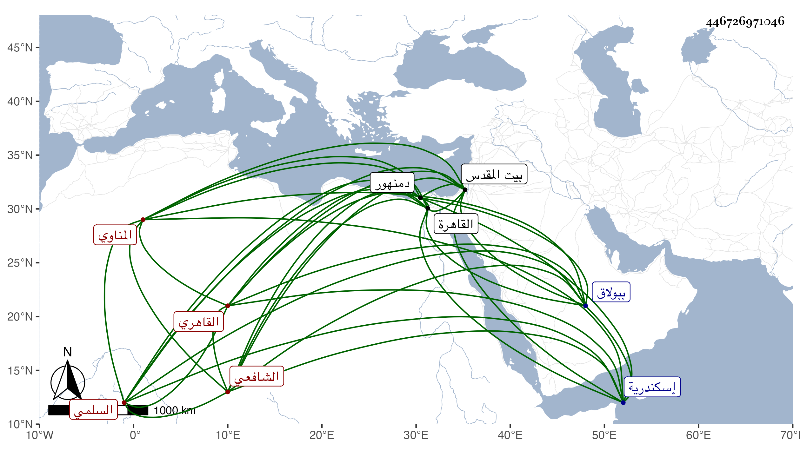

0902Sakhawi.DawLamic.ITO20230111-ara1.EIS1600.446726971046
Biography ID: 446726971046
589
علي بن أحمد بن عثمان بن محمد بن إسحاق النور بن البهاء بن الفخر ابن التاج السلمي المناوي الأصل القاهري الشافعي الماضي أبوه والآتي أخوه السراج عمر ويعرف كسلفه بابن المناوي وهو سبط النور بن السراج بن الملقن أمه خديجة وجده تاج الدين هو أخو الشرف إبراهيم والد الصدر محمد الآتي . ولد في ثالث عشري ربيع الأول سنة ثلاث عشرة وثمانمائة بالقاهرة ونشأ بها فحفظ القرآن والعمدة والمنهاج الفرعي والأصلي وألفية ابن مالك والبردة وبانت سعاد وغيرها وعرض على الولي العراقي وجماعة وعرف بفرط الذكاء بحيث أنه كان يحفظ في كل يوم مائة سطر وأما البردة وبانت سعاد فحفظهما في ثلاثة أيام وأعطاه والده لذلك بندقتين ذهبا وذكر لي أنه استعمل في صغره اليسير من حب البلاد وأن بعض أقربائه رام قتله بالماء الحد فرأت أمه النبي صلى الله عليه وسلم فشكت ذلك إليه فرقاه فشفي ، وأخذ الفقه عن المجد والشمس البرماويين والشرف السبكي ومما أخذه عن الثاني التنبيه والحلاوي تقسيما وكذا حضر عند الولي العراقي في تقسيمي الروضة والتنبيه وسمع عليه الحديث في آخرين وانتفع في الأصلين ببعض المذكورين وفي الفرائض والحساب وغيرهما بابن المجدي وعليه حضر في الميقات أيضا بل أخذه عن غيره من الائمة فيه وممن أخذ عنه في الجملة النجم ابن حجي والمقريزي والبرهان بن حجاج الأبناسي والقاياتي والونائي والمحلي ولازم الحضور عند السعد بن الديري في الميعاد والتفسير والحديث وكان يقع بينهما مباحثات ومضايقات وسمع على ابن الجزري وابن مغلي والشمس بن الديري وشيخنا وأخبرني أنه سمع على الشرف بن الكويك وتلقن الذكر من البرهان الأدكاوي بل قرأ عليه أبوابا من الأحياء وصحبه مدة وأخذ في طريق القوم أيضا عن ناصر الدين الطبناوي وفيه وفي غيره من العقليات عن العلاء البخاري وأذن له الشمس البرماوي والسبكي في الإفتاء والتدريس واستقر هو وأخوه في وظائف والدهما بعد موته في سنة خمس وعشرين وهي التدريس بالجاولية والسعدية والسكرية والقطبية والعتيقة والمجدية والمشهد الحسيني وإفتاء دار العدل وغيرها وناب عنهما فيها خالهما الجلال بن الملقن إلى أن استقل هو بمباشرتها وكذا ناب في القضاء عن العلم البلقيني قبل الثلاثين واستمر ينوب عن من بعده ومن الأماكن التي ناب في قضائها الأعمال الخيرية والدجوية والدمنهورية وكان معه فيها تصدير والقليوبية والمنوفية بل فوض له المناوي الحكم حيث حل وجعل له عزل من شاء وتقرير من شاء ، وحج سبع مرار وزار بيت المقدس مرتين ولقي هناك الشهاب بن رسلان وبالمدينة النبوية المحب المطري وأخذ عنهما ودخل إسكندرية وغيرها وقرره الزين الاستادار في مشيخة جامعه ببولاق فقطنه وكذا ولي التصدير بجامع البارزي هناك أيضا وتصدى للتدريس فأخذ عنه الفضلاء وربما أفتى ، وكان وافر الذكاء خفيف الحركة كثير التواضع طارح التكلف خامل الذكر بحيث استقر في وظائف خاله من هو أتم فضلا منه غاية في الكرم مع التقلل جدا وكثرة اشتغاله بالتوعك بأخرة والرغبة في الانجماع والميل إلى المماجنة ذا نظم ونثر ورغب عن جل وظائفه بحيث لم يبق معه سوى الاستادارية والبارزية والتصدير بدمنهور وله تعاليق يسيرة لم يكمل شيء منها كعكاز المحتاج لتوضيح المنهاج وكتعليق على الحاوي وعلى أبي شجاع وقال انه لو كمل لكان في عشرين مجلدا اجتمعت به كثيرا وسمعت من فوائده ومباحثه وكتبت عنه من نظمه أشياء منها :
| إن الزمان كميزان بلا ريب | يحط كل ثقيل العقل والدين |
| لذاك قصرت عن دنياي يا أملي | لأن لي ثقة بالله تكفيني |
مات في يوم الجمعة سلخ ربيع الأول سنة سبع وسبعين وصلى عليه من الغد ودفن بحوش سعيد السعداء عند قبر ابن الميلق قريبا من الكمال الدميري رحمه الله وإيانا .
